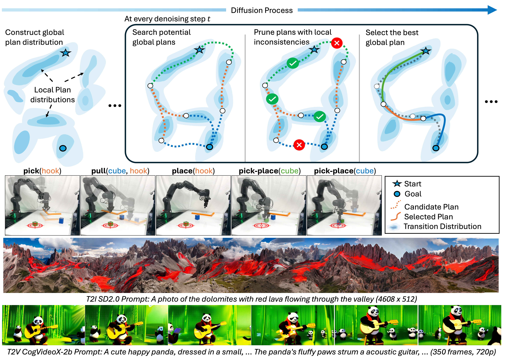
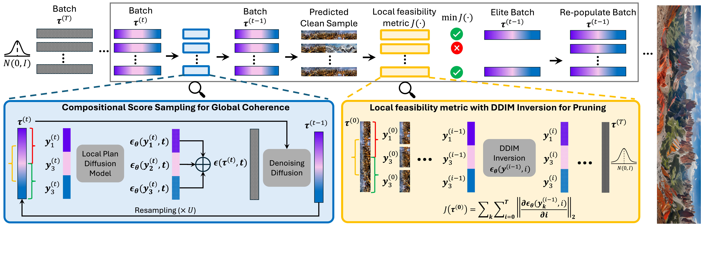

Compositional Diffusion with Guided search for Long-Horizon Planning

Abstract
Generative models have emerged as powerful tools for planning, with compositional approaches offering particular promise for modeling long-horizon task distributions by composing together local, modular generative models. This compositional paradigm spans diverse domains, from multi-step manipulation planning to panoramic image synthesis to long video generation. However, compositional generative models face a critical challenge: when local distributions are multimodal, existing composition methods average incompatible modes, producing plans that are neither locally feasible nor globally coherent. We propose Compositional Diffusion with Guided Search (CDGS), which addresses this mode averaging problem by embedding search directly within the diffusion denoising process. Our method explores diverse combinations of local modes through population-based sampling, enforces global consistency through iterative resampling between overlapping segments, and prunes infeasible candidates using likelihood-based filtering. CDGS matches oracle performance on seven robot manipulation tasks, outperforming baselines that lack compositionality or require long-horizon training data. The approach generalizes across domains, enabling coherent text-guided panoramic images and long videos through effective local-to-global message passing.
Method
CDGS is a structured inference-time algorithm designed to identify coherent sequences of local modes that form valid global plans. Specifically, CDGS employs a population-based search to explore and select promising mode sequences beyond naive sampling. To facilitate the search, it:
- Incorporates iterative resampling into the compositional score calculation to enhance information exchange across distant segments, leading to potentially coherent global plan candidates.
- Prunes the incoherent candidates by evaluating the likelihood of their local segments with a ranking objective.

Results
We evaluate our approach across three key domains that demonstrate the versatility and effectiveness of our method. Each evaluation category showcases different aspects of our algorithm's capabilities.
🤖 Long Horizon Manipulation Tasks
Complex robotic manipulation sequences requiring long-horizon planning and reasoning about inter-step dependencies.
🌄 Panoramic Image Generation
High-resolution panoramic image synthesis upto 512 x 4608 with seamless stitching and detail preservation.
🎬 Long Video Generation
Extended video sequence generation upto 350 frames while maintaining temporal and subject consistencies.